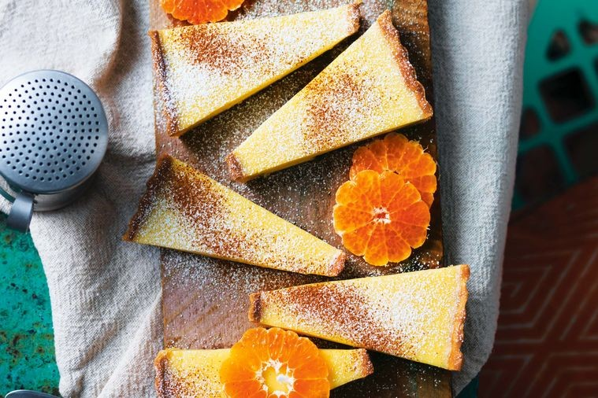

INGREDIENTS
- 750ml of milk
- 1 vanilla bean
- 1 cinnamon quill
- 1 Mandarin
- 2 eggs
- 2 tbsps cornflour
- 2 tbsps cake flour
- 110g caster sugar
- Ground cinnamon and icing sugar to dust
- 185g cake flour
- 55g caster sugar
- 100g cold unsalted butter
- 2 teaspoons milk
- Finely grated zest of 1 mandarin
METHOD
Prep time: 1HR | Cooking time: up to 1hr 5 mins
- Prehat the oven to 180 degrees celsius.To make the pastry, combine flour, sugar and butter using a stand mixer. Mix until the mixture resembles fine breadcrumbs.
- Add eggs yolk, milk and zest, then mix until the mixture comes toegther.
- Shape in a disc, enclose in plastic wrap and chill for 30 minutes.
- Roll out pastry on a floured surface till 4mm thick, then place it onto a greased tart pan. Freeze tart shell for 5 minutes.Prick base with fork, brush with beaten egg and bake for 30 minutes.
- To make filling, place milk, vanilla pod and seeds and cinnamon in a saucepan over medium heat.
- Peel mandarin, reserving the fruit to serve, and add peel to the pan. Bring to simmer and infuse for 15 mins.
- Whisk eggs, flour and caster suager to combine. Pour milk over egg mixture and stir constantly, then return to the pan over low heat.
- Cook and sit constantly until thickened.Bake for 20-25 minutes until set and cool slightly.
- Sprinkle the tart with cinnamon and icing sugar.Serve with sliced mandarin.